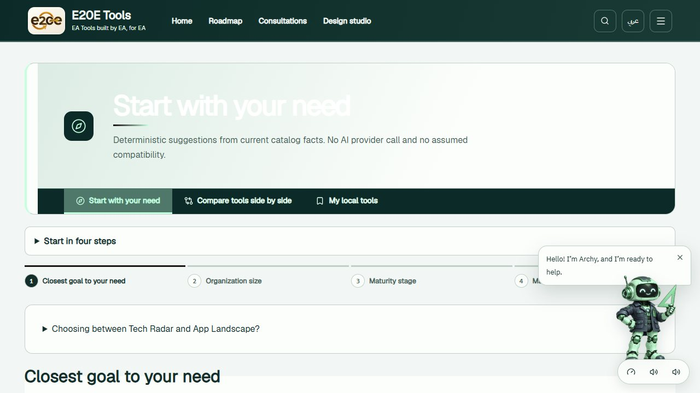
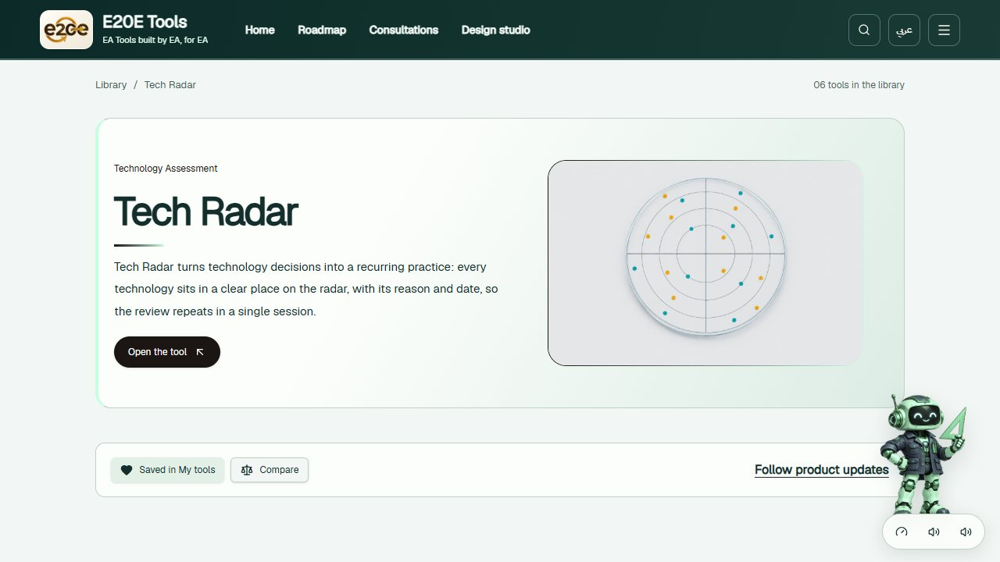
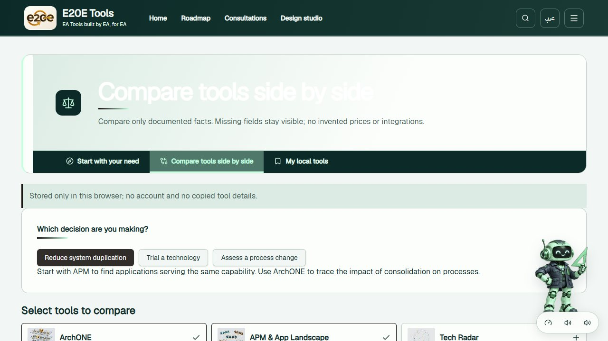
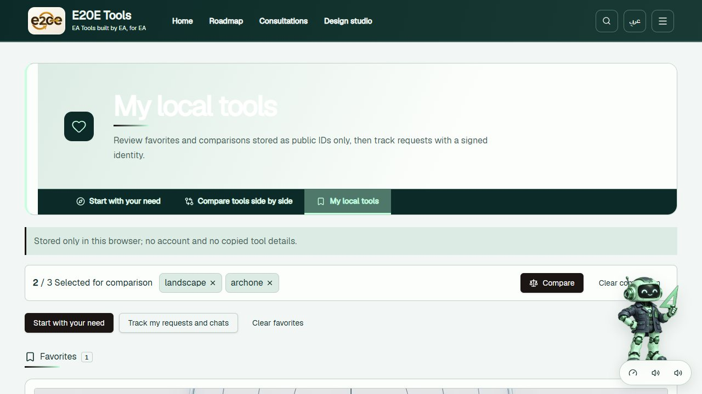
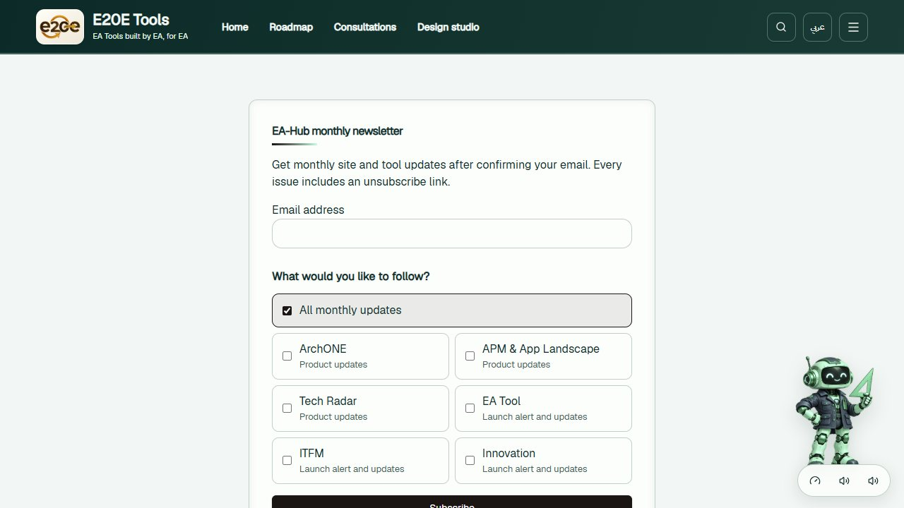

01 / 05Find your starting pointChoose your goal on the discovery page. Review the matches and open the tool that best fits your needs.Open this page
02 / 05Inspect a tool before opening itRead the capabilities and requirements. Launch an available tool, or save it and return to it from My tools.Open this page
03 / 05Compare tools for a decisionPick a decision or select tools yourself. Turn on Show differences only to focus on the criteria that set them apart.Open this page
04 / 05Return to your saved toolsOpen My tools from Workspace on the same device. Choose a saved tool to continue your review.Open this page
05 / 05Follow product updatesEnter your email, choose monthly updates or specific products, then subscribe and confirm your address by email.Open this page